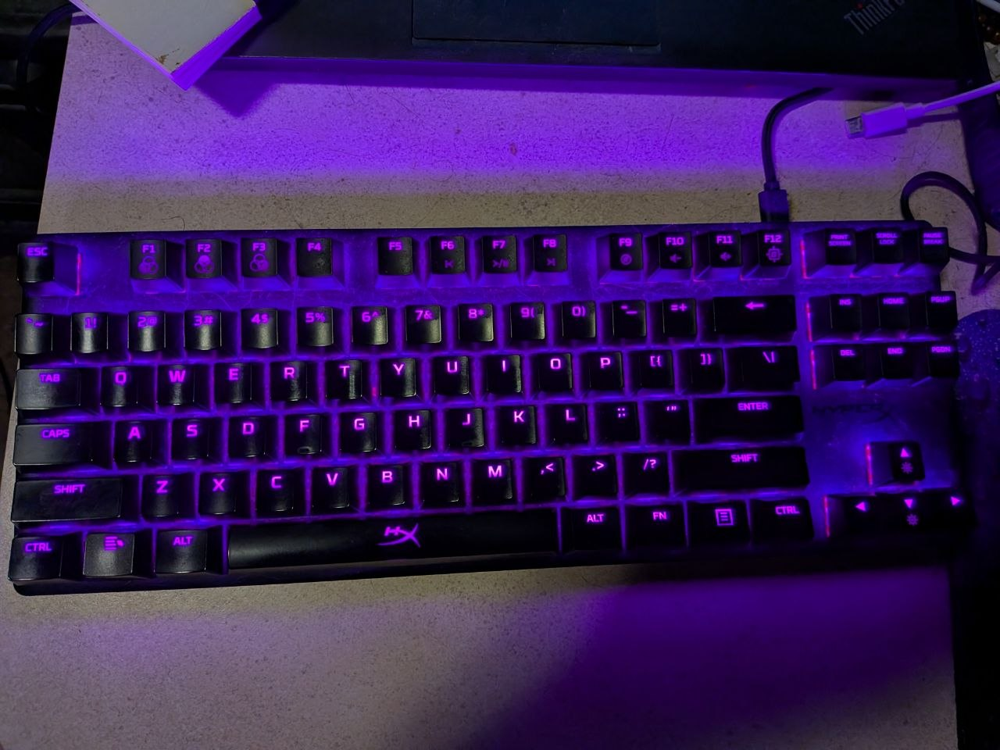
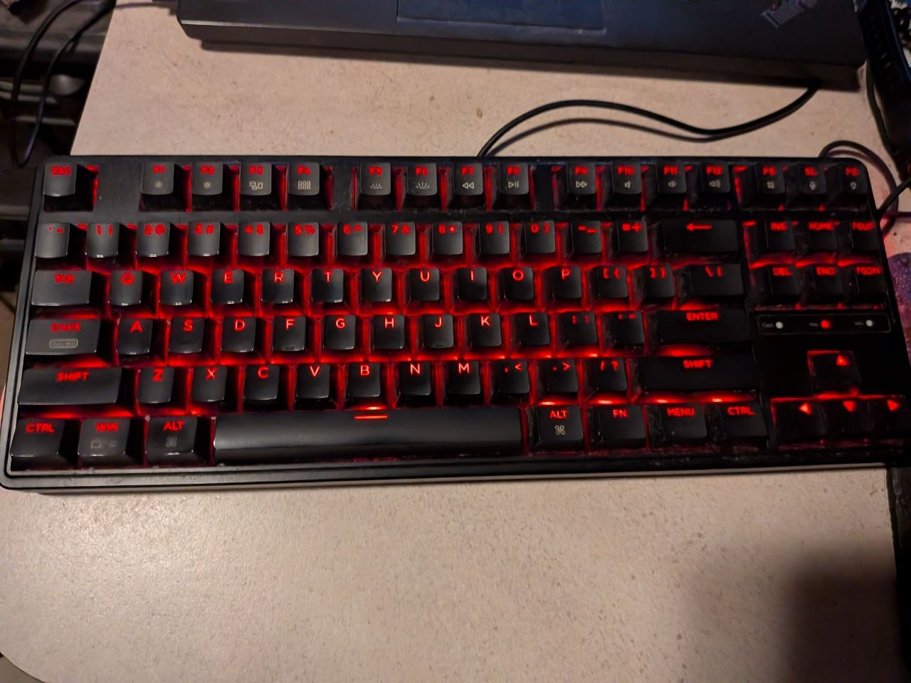
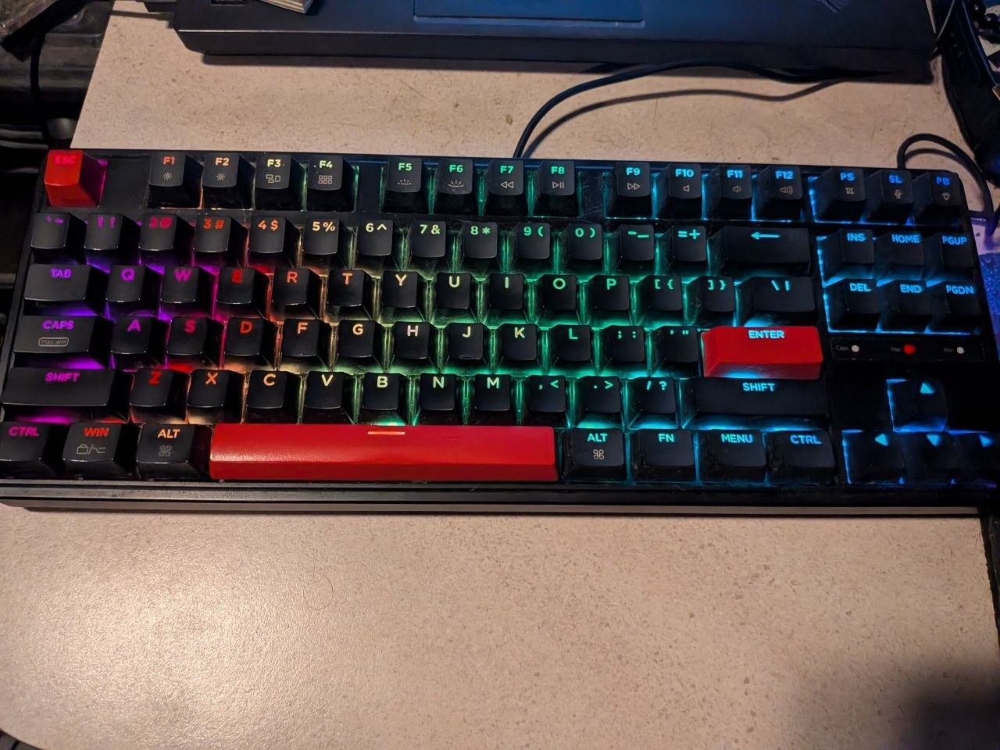
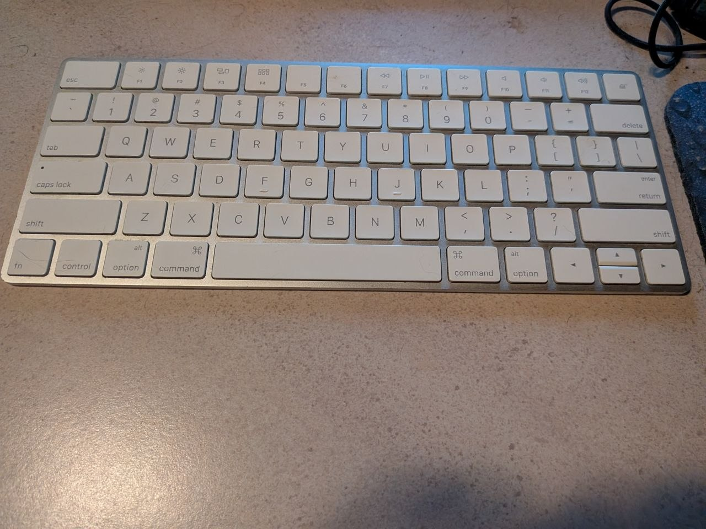

now | blog | wiki | recipes | bookmarks | contact | about | donate
* * * back home * * *
the keyboard collection
I have quite the collection of keyboards. I spend a lot of time on my computers doing FOSS/web dev, making music, as well as playing games and just hanging out, and as such, I love having a great typing experience.
We live small, and I prefer smaller boards to begin with, so you will notice that each of my keyboards are tenkeyless. I prefer the extra desk space they offer, especially working on smaller desks. I don't use the number pads anyway on full-sized keyboards, so I always seek out more compact boards.
I have more keyboards than are shown on this page, but I'm going to focus on the main ones I use.

I bought this keyboard on a whim in 2019, and it is still soldiering right along as one of my main keyboards I use every single day. It is a hell of a typing experience, and extremely comfortable to use. You wouldn't know that I bought this board years ago, as it is in just as good condition today as the day I bought it.
This board is extremely durable. The chassis is made of "aircraft-grade" brushed aluminum. I slightly modified it by replacing one key. I got rid of the Windows logo for the Super key, as you can tell from the photo above, and replaced it with another key from one of my other boards.
This keyboard is powered by USB-C, and has a nice detachable braided cable. When I first bought this board brand-new in 2019, it went for about $110 or so and still goes for about $100 on the HyperX website, but it can also be had now for a cool $70-$80 depending on where you search for it online. I love this board so much that if something happened to it, I'd pick up another one in a heartbeat. Definitely a huge part of my kit.
relevant link: hyperx alloy origins core

Keychron makes very nice mechanical keyboards, and the C3 Pro is no exception. On the price end, they are a very good value. As you can tell from the images, I purchased two in 2024, thanks to the fact that these models come with two different types of switches (red and brown).
Several years ago, my friend had gotten a Keychron keyboard, and I tried it out and greatly enjoyed it. I began looking through options from Keychron, and decided to give these models a whirl and see how I liked them. They quickly became some of my favorite boards, and I am glad I picked them up.

These can be purchased for about $40. They provide a great and comfortable typing experience. I keep one with the machine in my house, and the other in the machine in my office, so I can use one on each of the main machines if I'd like.
These keyboards can be used in either a Mac-style layout or a Windows-style layout, and you can adjust the layout on the fly with a simple key combination (function+tab). I always use the Mac-style layout since that is what I have always been more comfortable with. They also use the QMK (Quantum Mechanical Keyboard) open-source firmware, allowing users to customize keys, macros, and lighting.
relevant link: keychron c3 pro

I normally prefer mechanical keyboards, but I have had a soft spot for the Apple Magic Keyboard since my old days of using the Mac (I also largely prefer the Mac keyboard layout over Windows-style boards). It is the only non-mechanical keyboard I actively use, and it is a great board to use if I want to go wireless for awhile, or to throw in my bag if I'm traveling.
I got this one in 2024. It lasts quite awhile on a charge. I can charge it for about 30 minutes, and it will last a month or more on that single charge. To make things even better, these boards work quite well on GNU/Linux.
These were the main style of keyboards I used when I was mainly on the Mac back in the day (I switched primarily to GNU/Linux distributions in 2012), so I will always have a soft spot for them. They feel nice to type on, they are silent, easy to carry around, and they look incredibly sleek. The chassis is made of brushed aluminum, and the keys are made of polycarbonate plastic.
relevant link: apple magic keyboard
Sometime soon, I am going to build a custom mechanical keyboard. I am making some plans on how I am going to go about it, and haven't yet decided on the chassis, but I know for sure I am going to be going for runic keycaps, using the Elder Futhark runes as the key labels. It is going to look pretty cool if it all works out right!
When this project is done, I will certainly be updating this Wiki entry with the details and some photos. I have been looking forward to building my own board for quite awhile, and now that I've finally gotten some plans together for it, I will be picking up some parts pretty soon and getting it done. As I mentioned, I am still deciding on what I'm going to be using for the chassis, but I have found a set of Elder Futhark rune keycaps online that I am going to be using for the project. Looking forward to getting it done and using it!